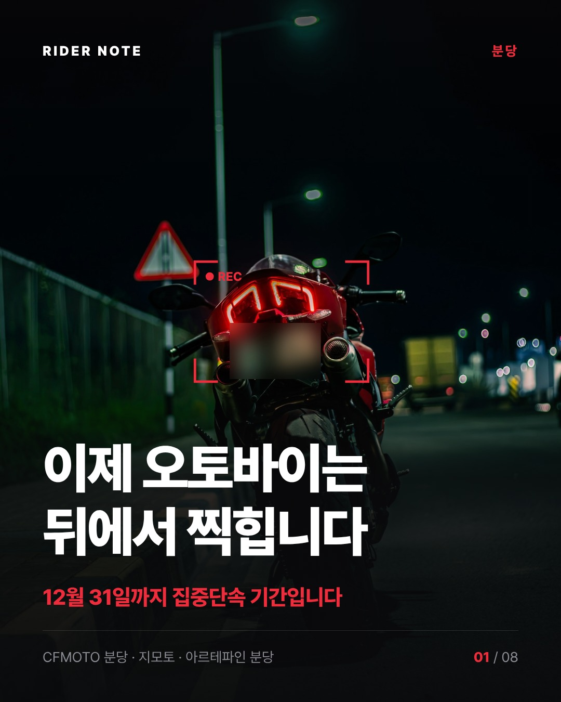
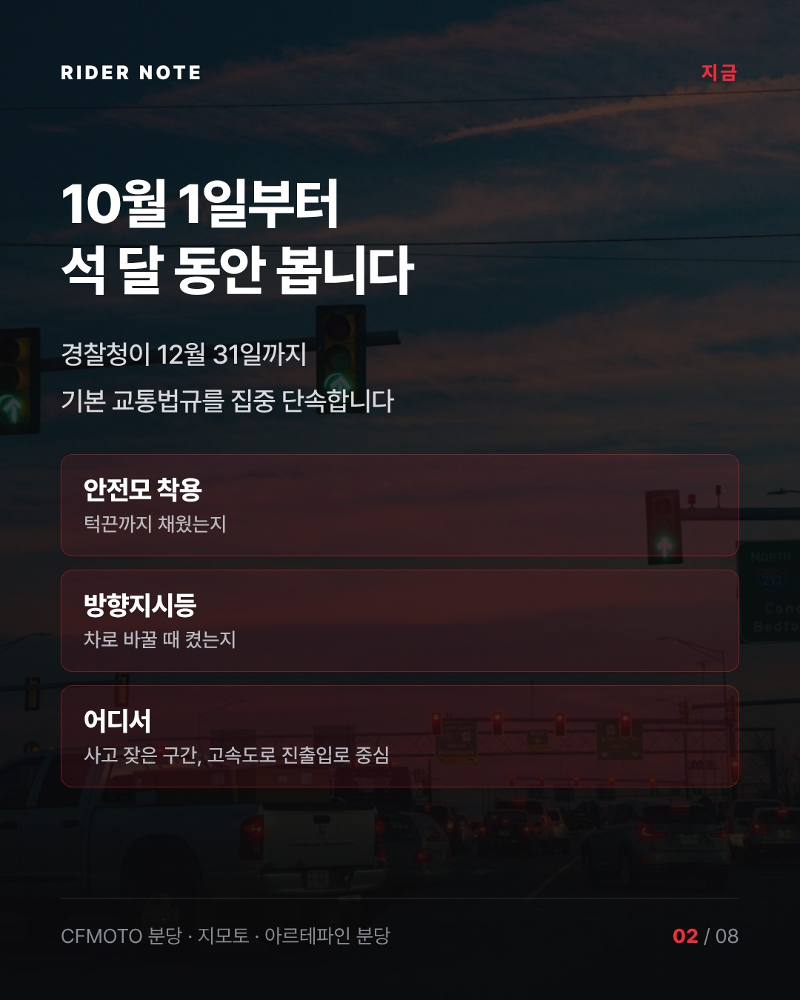
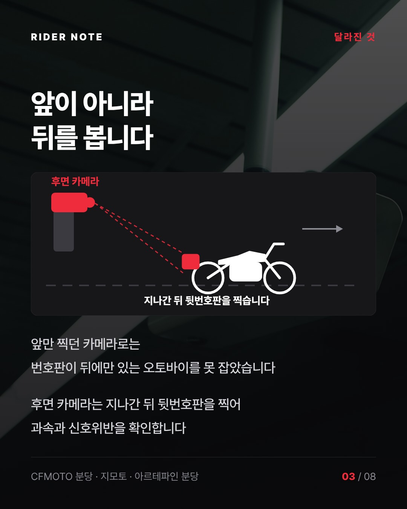
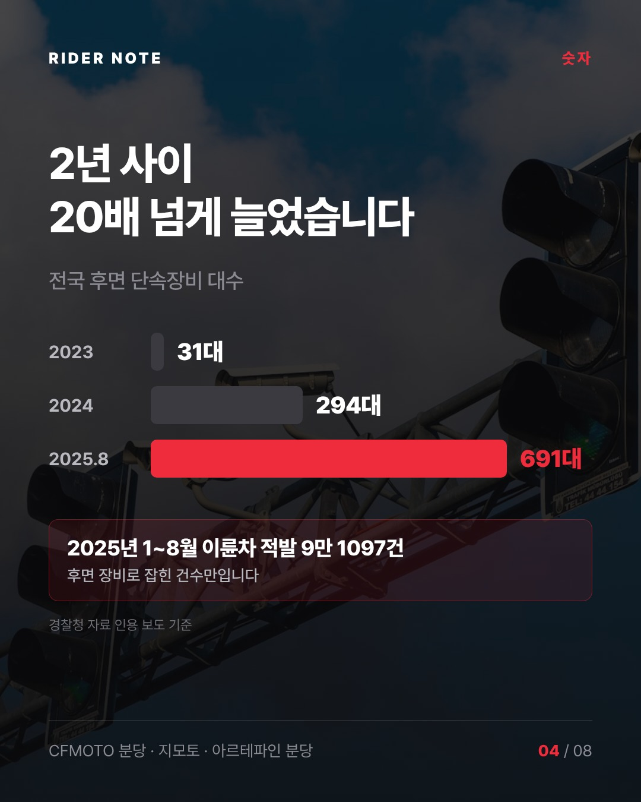
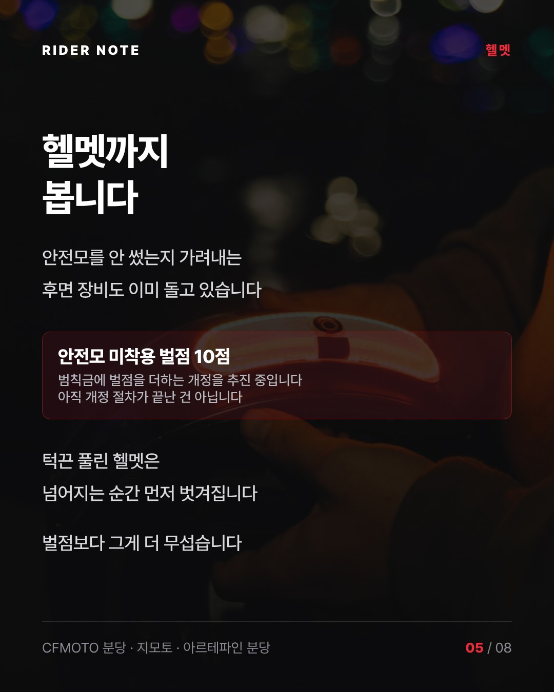
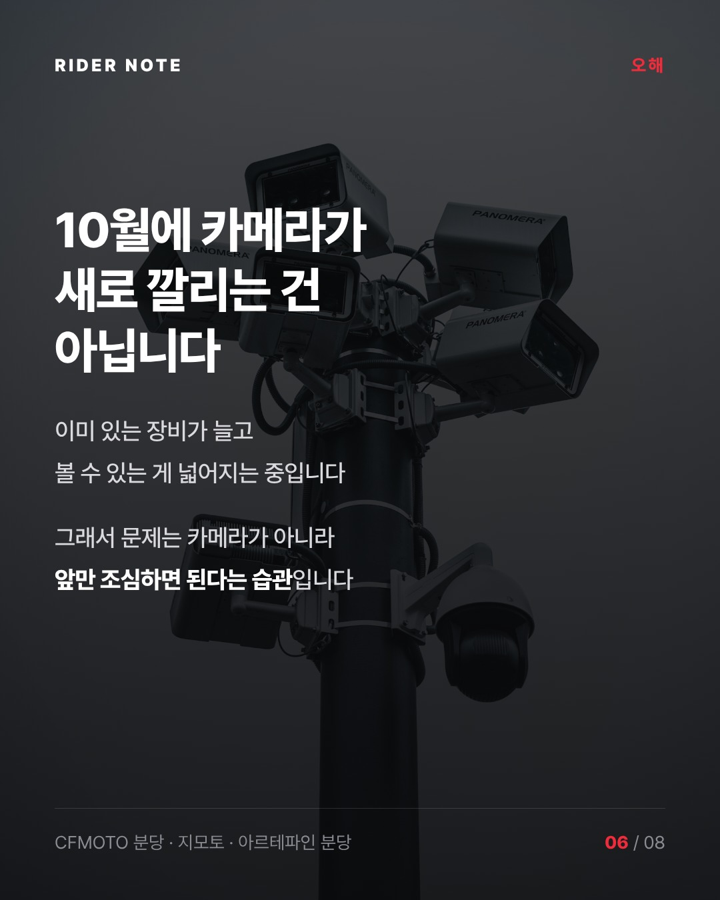
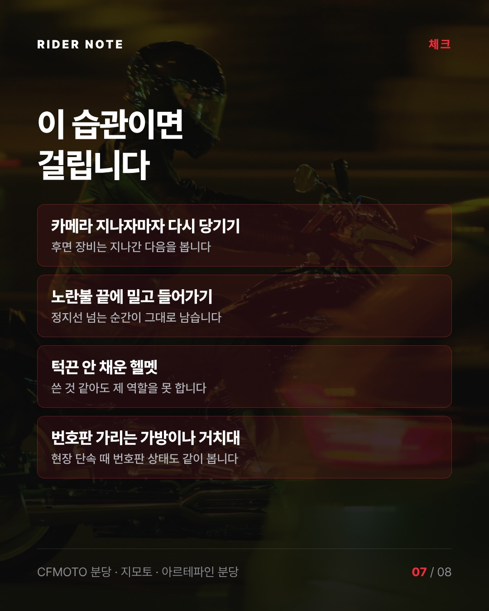
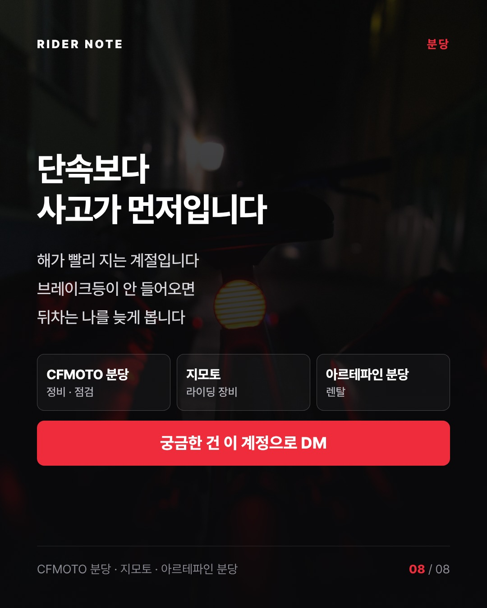

카드 8장 · CFMOTO 분당 · 지모토 · 아르테파인 분당 공통








이제 오토바이는 뒤에서 찍힙니다 10월 1일부터 12월 31일까지 경찰청 집중단속 기간입니다 안전모, 방향지시등 같은 기본 법규를 봅니다 예전 카메라는 앞번호판을 찍었습니다 번호판이 뒤에만 있는 오토바이는 빠져나갔죠 후면 카메라는 다릅니다 지나간 다음 뒷번호판을 찍습니다 이 장비가 2023년 31대에서 2025년 8월 691대까지 늘었습니다 안전모를 안 썼는지 가려내는 장비도 이미 돌고 있고요 안전모 미착용에 벌점 10점을 더하는 개정도 추진 중입니다 아직 확정은 아닙니다 그런데 단속보다 걱정되는 건 습관입니다 카메라 지나자마자 다시 당기기 노란불 끝에 밀고 들어가기 턱끈 안 채운 헬멧 해가 빨리 지는 계절이라 브레이크등 하나 꺼져 있어도 뒤차는 나를 늦게 봅니다 점검은 CFMOTO 분당 장비는 지모토 렌탈은 아르테파인 분당 궁금한 건 이 계정으로 DM 주세요 #CFMOTO분당 #지모토 #아르테파인 #후면단속카메라 #오토바이단속
배경 사진 Unsplash 무료 라이선스 · 번호판 흐림 처리